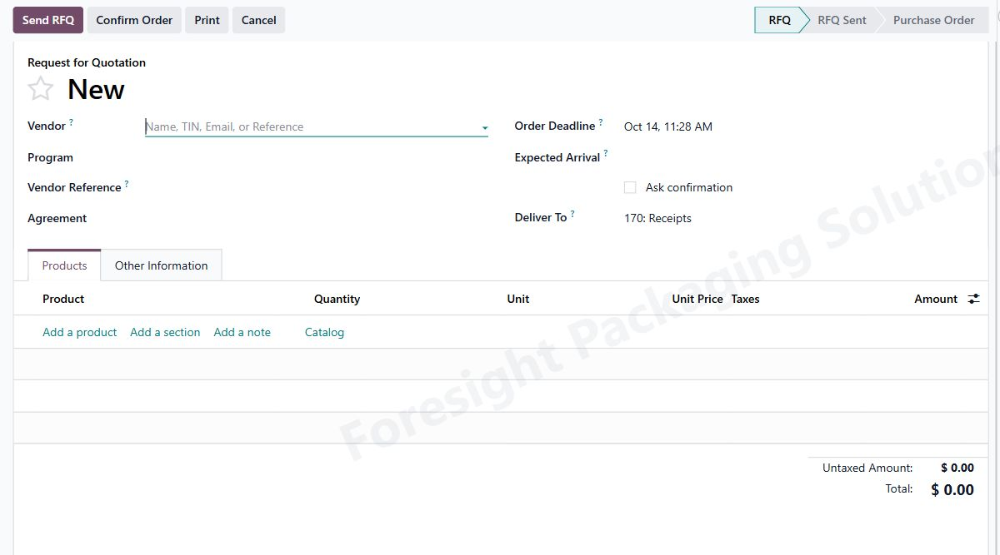
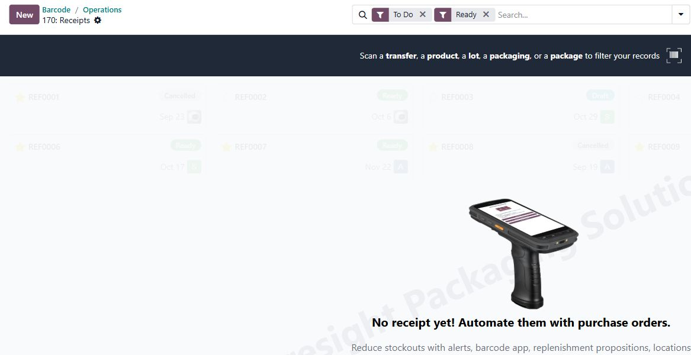
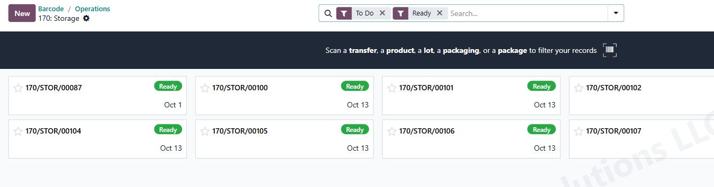
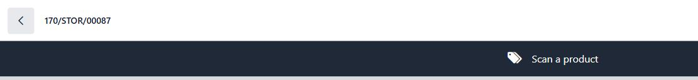
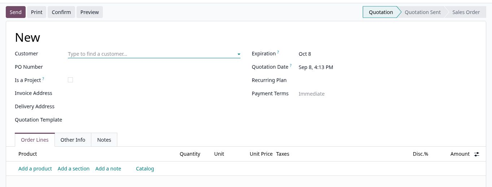
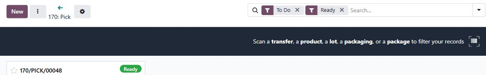
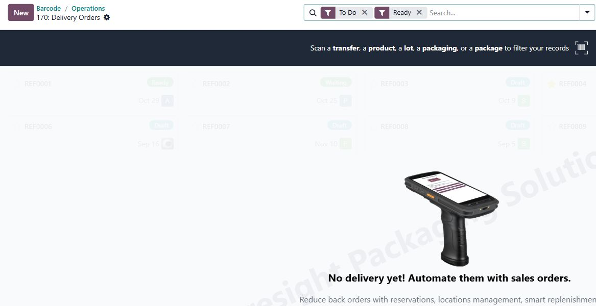

Everyday work · Odoo 19
From purchase order to shipment
Short guides for the tasks people perform each day. Warehouse screenshots show the Barcode app; sales and purchasing screenshots show their own forms.
Process map
How the work moves
Purchasing brings goods into stock. Sales creates the customer commitment and starts the outbound work. Select a step to jump to its guide.
Inbound · get stock ready
- PurchaseCreate RFQ / POOrder from vendor
- BarcodeReceiveScan what arrived
- BarcodeStock / put awayMove to bin
- InventoryStock availableReady for orders
Outbound · fulfill the customer order
The exact handoff depends on the warehouse route and stock availability. A confirmed PO normally generates a receipt; a confirmed sales order can generate a pick and delivery. Finish each Barcode operation only after its actual quantities and destination are correct.
Warehouse-to-warehouse · Illustrated SOP
Transfer stock from 170 to Celestial
Follow the complete load-planning, picking, BOL, dispatch, transit and receiving workflow. Eight sandbox screenshots show the actual fields and controls, including the Celestial receipt reference and progress columns.
Open the 170-to-Celestial guide01 · Purchasing
Create a purchase order
- Open Purchase → Requests for Quotation and select New.
- Choose the vendor, add products and quantities, then check price, expected arrival, and Deliver To.
- Save and send the RFQ for vendor review when needed. Select Confirm Order once the purchase is approved.
- Open the receipt linked to the PO when the goods arrive.

02 · Barcode receiving
Receive goods
- Open Barcode → Operations → Receipts for the correct warehouse.
- Scan the receipt barcode or select the receipt from the queue. Match it to the PO and physical delivery.
- Scan each product and enter the quantity actually received. Record any shortage or exception shown on the transfer.
- When the warehouse requires pricing approval, select Validate → Record Physical Arrival. With QZ SATO Labels 19.0.1.0.8 or newer, enter label quantities and select Print Labels or Skip Printing.
- Physical arrival and printing labels do not make stock available. An authorized reviewer confirms pricing, then the receipt is finally validated. Without the pricing workflow, validate normally after checking quantities.
- Use Daily Received Items or Weekly Received Items to review Final Validation and Pricing. Select Open to Validate for a pending receipt. Finish any separate Storage transfer afterward.

03 · Barcode storage
Put received goods in stock
- Open Barcode → Operations → Storage and select the ready transfer created for putaway.
- Scan the product and its destination bin or location as prompted.
- Check the quantity moved to that location. Repeat for every line and destination.
- Select Validate when the putaway is physically complete.


04 · Sales
Create a customer quote
- Open Sales → Orders → Quotations and select New.
- Choose the customer and add product lines, quantities, and prices.
- Check delivery address, customer PO number if supplied, taxes, terms, and total.
- Save, preview, and send the quotation when it is ready for the customer.

For Program quotes, use the detailed quotation SOP to link the Program correctly.
05 · Sales
Confirm a sales order
- Open the accepted quotation in Sales → Orders → Quotations.
- Recheck customer, products, quantities, prices, delivery address, and promised date.
- Select Confirm. Odoo changes the quotation to a sales order.
- Open its delivery or warehouse transfer and check the next operation assigned by the route.
06 · Barcode picking
Complete a pick ticket
- Open Barcode → Operations → Pick for the correct warehouse.
- Scan the pick ticket or select its ready card. Check the transfer reference.
- Scan the source bin and each product; enter the quantity actually picked.
- Move goods to the destination shown on the ticket and select Validate when the pick is complete.

07 · Barcode shipping
Ship the customer order
- Open Barcode → Operations → Delivery Orders for the correct warehouse.
- Scan the delivery transfer or select it from the ready queue. Confirm the destination and items match the shipment.
- Scan products or packages as prompted and verify the quantity being shipped.
- When the goods have been handed off and the details are correct, select Validate to complete the delivery.
